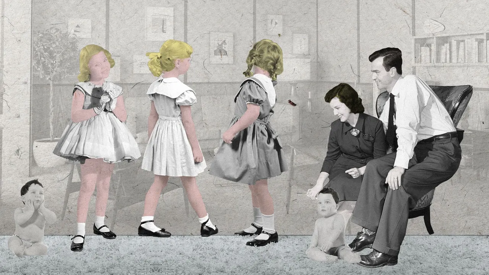
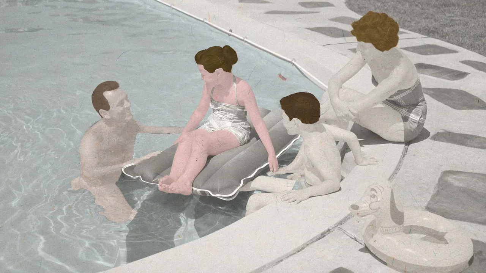
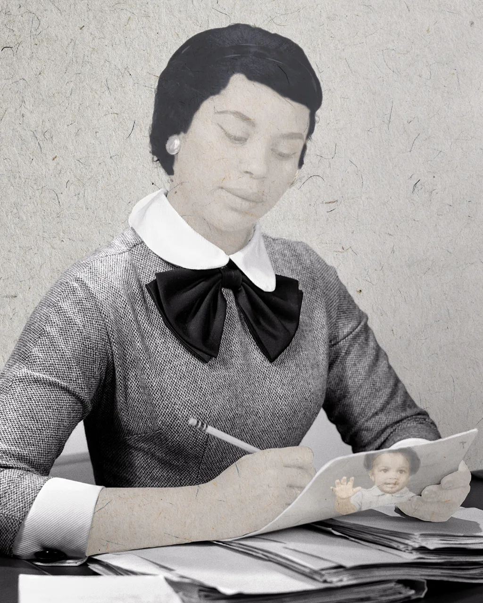
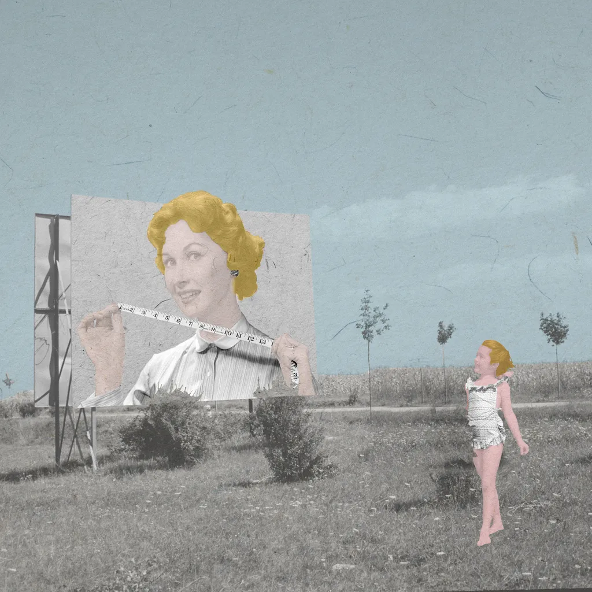
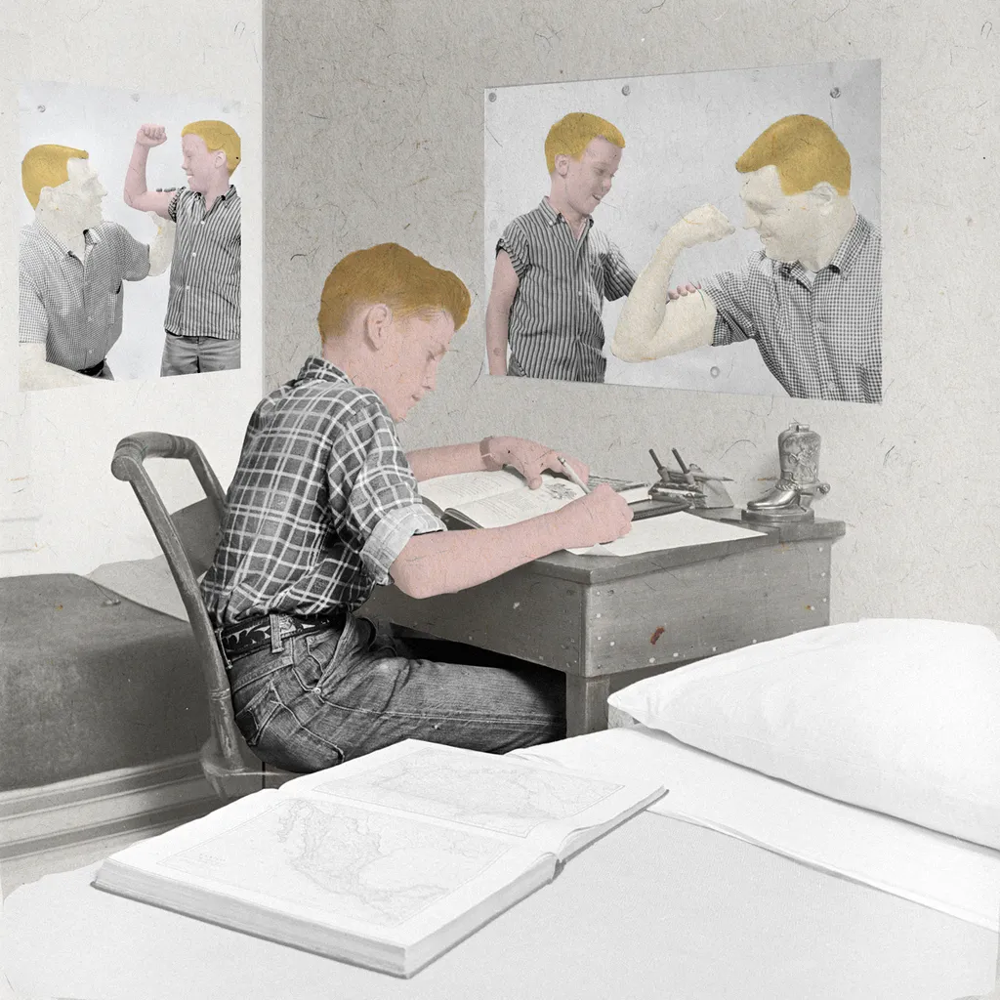
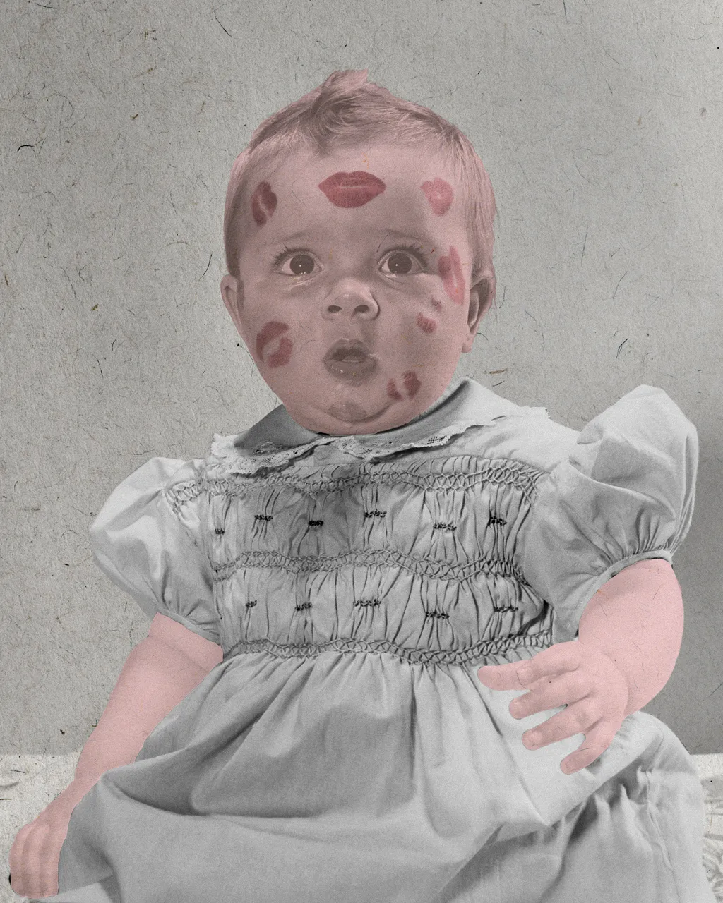

Our brain changes hugely during adolescence. New research shows how we can use this transformation
to help teens achieve their potential.
Our brain changes hugely during adolescence. New research shows how we can use this transformation to help teens
achieve their potential.
Terri Apter, a psychologist, still remembers the time she explained to an 18-year-old how the teenage brain works:
"So that's why I feel like my head's exploding!" the teen replied, with pleasure.
Parents and teachers of teens may recognise that sensation of dealing with a highly combustible mind. The teenage
years can feel like a shocking transformation – a turning inside out of the mind and soul that renders the person
unrecognisable from the child they once were. There's the hard-to-control mood swings, identity crises and the
hunger for social approval, a newfound taste for risk and adventure, and a seemingly complete inability to think
about the future repercussions of their actions.
In the midst of this confusion, adolescents are consistently assessed for their academic potential – with
ramifications that can last a lifetime. No one's fate is sealed at 18 – but an impeccable school record will
certainly make it far easier to find a place at a prestigious university, which will in turn widen your options
for employment. Yet the emotional rollercoaster of those years can make it extremely difficult for teens to reach
their intellectual potential.
It is only within the past two decades or so that scientists have been able to chart the neural changes across
this core period of development, and decode the mysteries of the teenage brain.
These exciting new insights not only help explain why teens feel and act the way they do. They also show that some
of the traits that adults tend to find difficult or baffling in teenagers can be turned into a strength, and used
to acquire skills and insights at a time when the brain is still malleable.
After all, adolescence is also a time of various cognitive leaps. Teens are building on the basics they had learnt
as young children to develop sophisticated and mature ways of thinking, including more abstract reasoning and a
more nuanced "theory of mind".
"Fifty years ago, in schools, it would not have been seen as necessary for students to know about puberty," John
Coleman, a clinical psychologist and author of The Teacher and the Teenage Brain. "And I think in 20 or 30 years,
we'll be asking why we weren't helping students to understand what's going on in their brains. It can make a real
difference."
The teenage years can be a time of huge intellectual growth, but also, intense academic pressure (Credit: Getty
Images)
The teenage years can be a time of huge intellectual growth, but also, intense academic pressure (Credit: Getty
Images)
Understanding the teenage brain
It is no wonder that many teens, throughout history, have complained of feeling misunderstood. Our traditional
explanations for adolescent behaviour have been frustratingly crude. Their risk-taking, rebelliousness,
impulsivity and general irritability can be so easily blamed on things like ignorance and immaturity, or their
"raging" hormones and increased sex drive.
Often their complaints of emotional anguish simply invite ridicule. As the neuroscientist Sarah-Jayne Blakemore,
author of Inventing Ourselves: The Secret Life of the Teenage Brain, recently put it: "It is not socially
acceptable to mock and demonise other sectors of society... But it is, strangely, acceptable to mock and demonise
teenagers."
HOW DO TEENAGERS' BRAINS CHANGE?
As we mature from children to adults, our brain undergoes massive changes. Here are some of the most important
ones:
- The frontal cortex builds and then prunes networks throughout adolescence, which helps the brain become more
efficient. This allows for a huge expansion in skills.
- In the frontal and parietal lobes, the brain similarly reinforces the most important connections. This shows up
in brain scans as a noticeable increase in "white matter".
- As these changes happen, some brain areas develop more quickly than others, which may affect behaviour. For
example, areas associated with reward tend to develop faster than those linked to self-control, which may
encourage impulsive decisions.
Early childhood, is, of course, the period of greatest change. In the first few months of life, the brain builds
many connections between neurons, before pruning back the redundant neural pathways, which allows for more
efficient networks. This innate "plasticity" means the young child's brain is particularly malleable, allowing
them to go from a bawling baby to a walking, talking toddler.
In many areas of the brain – such as those involved in sensory processing – these networks tend to stabilise long
before adolescence, which makes it harder to learn certain perceptual or motor skills, such as language or music,
after the early "sensitive period".
The frontal cortex shows a different trajectory, however, and it continues to build and then prune networks
throughout puberty and adolescence and into early adulthood. In the frontal and parietal lobes, the brain also
reinforces the most important connections by adding a fatty insulating sheath – known as myelin – which improves
the transmission of signals. In brain scans, this shows up as a noticeable increase in "white matter" over
adolescence. These developing areas are important for a host of skills, including emotional regulation,
maintaining attention, problem solving and abstract reasoning.
While teen brains may have already lost some of the malleability of early childhood, this continued development
means that they are still very sensitive to intellectual stimulation with a huge capacity for learning. This
allows them to build on the academic skills and knowledge that they had started to develop in childhood and
develop more sophisticated ways of experiencing the world.
Unfortunately, the neurological and psychological changes taking place may sometimes feel overwhelming, a fact
that can go a long way to explaining some of the behaviours that cause so much disruption at school and at home.
Teenagers are famous for their love of risk – but this can also make them open to positive new experiences
(Credit: Getty Images)
Teenagers are famous for their love of risk – but this can also make them open to positive new experiences
(Credit: Getty Images)
Rebels with a cause
Consider teens' famous risk-taking, rule-breaking and general rebelliousness.
Brain imaging studies show that the regions of the brain associated with reward generally develop more quickly
than those associated with inhibition and self-control. On average, they have greater activity in their dopamine
signalling – a neurotransmitter associated with pleasure and curiosity – compared to both adults and younger
children, with bigger spikes when they experience something that is novel or exciting.
The teenage years can be a time of huge intellectual growth, but also, intense academic pressure
(Credit: Getty Images)
Mood swings
Teens' mood swings can be similarly explained by the interplay of physiological and psychological processes
associated with maturation. For one thing, many teens have greater fluctuations in neurotransmitters and hormones
such as serotonin, GABA and cortisol – all of which can modify their mood. "If you take serotonin, it's the
'feel-good hormone' – and when it's down you're going to get a very low mood," says Coleman.
Teens are also experiencing increased activity in the medial prefrontal cortex, which is involved in processing
and responding to other people. Research shows that activity in brain areas related to self-evaluation tends to
peak during mid-adolescence, especially for information related to status. This ability to understand social
interactions and networks is incredibly important in the formation of teens' friendships, but it may mean that
they are especially sensitive to slights and signs of hostility, increasing their susceptibility to social
anxiety.
When teens appear to be 'over-dramatic', they're simply learning to navigate the complexities of their emotional
world
Parents of teens may be surprised at how long they can spend pondering their own feelings. This is partly because
they haven't yet learnt how to interpret them and respond constructively. It's so much harder to process a
disappointment over an exam result, say, if you've never faced a serious failure before.
When teens appear to be "over-dramatic", they're simply learning to navigate the complexities of their emotional
world by themselves – skills that will be essential in later life.
Embracing change
If you do nothing else, simply expressing a genuine interest in what teens are feeling, and helping them to
understand the reasons for the challenges they are facing, may itself pay huge dividends.
When discussing her work with teens, Apter has had many positive encounters. She notes that teens are often
particularly receptive to the idea that the changes in their brains can be shaped by their actions. The truth is
that the more they practice skills like self-control and the regulation of their emotions, the better they will
become – a fact that is empowering.
With the right support, that mental explosion may feel less like a shocking jolt, and more like a burst of
fireworks: dramatic, yes, but also creative, awe-inspiring and beautiful.
--
David Robson is a science writer and author of The Expectation Effect: How Your Mindset Can Transform Your Life,
published by Canongate (UK) and Henry Holt (USA) in early 2022. He is @d_a_robson on Twitter.
How your family shapes your body image

Comments about our looks from our loved ones and friends can cause lifelong insecurities. How can
we teach kids to feel confident about their bodies instead?.
In the digital age, kids need a trusted source they can turn to with questions about love and sex – and research
shows how parents can get it right.
I never got the opportunity to do something that's almost a rite of passage among British teens – spend a sex
education class peeling a condom out of its stiff foil packet and rolling it down a banana. It wasn't until I was
27 years old that I would finally get to do it, but in a very different capacity. I wasn't learning how to put a
condom on. I was learning how I'd teach somebody else to put it on.
About 15 newly trained sex educators and I sat in front of our computers, condommed-bananas in hand. "We often
use flavoured condoms," explained our teacher over Zoom, "because the smell is a bit more appealing than normal
condoms." He took a moment to look at the participants' expressions, and obviously found some of them looking less
passive than he’d hoped. "It's really important that you don't look or feel squeamish when you do this," he said.
"That's not how you want young people to feel when you're encouraging them to use these."
Many parents may feel a similar sense of squeamishness when trying to talk to their children about physical
intimacy – though attitudes to sex education can vary widely between countries and families, research shows.
A review of research on British parents' involvement in sex education found that they often felt embarrassed, for
example, and feared they lacked the skills or the knowledge to talk to their children. However, that same review
also found that in countries such as the Netherlands and Sweden, parents talked openly to their children about sex
from an early age, and that possibly as a result, teenage pregnancies and sexually transmitted diseases were far
less common than in England and Wales.
Parents who do feel awkward talking about sex can find themselves in a difficult spot. Many would like their
children to know that they can come to them with questions and problems, especially in the digital age, with
children coming across graphic online content at an increasingly young age. But they may struggle to decide when
and how to start.
Eva Goldfarb, professor of public health at Montclair State University, co-authored a systematic literature
review of the past 30 years of comprehensive sex education. While the review focuses on schools, Goldfarb says her
research holds important lessons for parents, too. One basic insight is that sex education has a positive,
long-term impact, such as helping young people form healthy relationships. Her advice to parents is not to skip or
delay these chats.
"Start earlier than you think," she says. "Even with very young children you can talk about names of body parts
and functions, body integrity and control."
This includes talking about issues that parents may not even think about as sex-related, but that are about
relationships more broadly: "Nobody gets what they want all the time, it's important to treat everyone with
kindness and respect."
In fact, parents tend to find it easier to talk to their children about sex when these conversations start at a
young age and come up naturally, separate research suggests. Answering young children's questions openly and
honestly can set a positive pattern that makes it easier to talk about more complex issues later.
This step-by-step approach can also be beneficial for children in terms of understanding their own origins and
identity. For example, research has shown that children who were conceived with the help of sperm donation, and
whose parents explained this from the start with the help of books and stories, felt more positive about their
origins than those who found out later.
For parents who want to broach the subject of sex but don't quite know how, research has revealed a number of ways
to get started.
What was your own sex education like?
Over the past few years, I have interviewed dozens of sex educators for my book debunking sex myths and
misinformation, Losing It. They are pretty much unanimous when it comes to Lesson One of sex education training –
figuring out your own level of sex education before considering passing it on to anybody else.
Numerous studies and surveys suggest that adults often do not know as much about sex and the body as they would
like to, and may even have completely inaccurate ideas that are grounded in myth or guesswork. For example, many
people around the world erroneously believe that the state of a woman's hymen can prove whether she is a virgin –
an idea that has no scientific basis.
Parents' basic level of knowledge can vary widely. Some may identify with the subjects of a study in Namibia,
which found that many parents didn't talk to their children about sex because they themselves felt that their
knowledge about human sexuality, or their ability to explain it, was inadequate. But a survey of almost 2,000
parents of young children in China found that parents' own sexual knowledge and sex education was generally good,
though they were less knowledgeable when it came to issues around child development, which made it difficult for
them to be effective educators.
Some of the Namibian respondents also avoided the topic because they viewed sex as taboo, or they thought
discussing it was going to encourage young people to have sex. The idea that talking to children about sex will
encourage them to think about things that aren't age appropriate, or seek out sexual experiences, remains common
around the world, including in the US. It tends to be linked to the belief that teaching abstinence from sex until
marriage is the best way to protect young people's health and safety.
However, research has shown the opposite. Simply telling teenagers not to have sex has been conclusively proven
not to work. The American Academy of Pediatrics calls educational programmes that only promote abstinence
"ineffective", based on a systematic review of the evidence. The review also shows that comprehensive sex
education helps prevent and reduce the risks of teen pregnancy and sexually transmitted diseases, echoing the
findings in the Netherlands and Sweden.
In fact, when parents, and especially mothers, talk to their teenage children about sex, the teens are more
likely to delay having sex for the first time, and engage in safer behaviour when they do have sex, especially in
the case of girls. The study of British families suggests that it is important to involve fathers in the
conversations, too, also because boys often feel sex education tends to be weighted towards the experience of
girls.
In short, teaching young people what it truly means to be ready the first time that they have sex, and what to
consider when doing so, is far more likely to lead to protect them than not telling them anything.
In Finland, parents prefer calling sex education "Kehotunnekasvatus" – "body emotion education"
What might be helpful, however, is reframing what exactly parents think sex education is. In Finland, researchers
conducted an experiment where they changed the name of sexuality education to "Kehotunnekasvatus" – "body emotion
education" – and evaluated how early childhood education professionals and parents felt about the term.
The majority preferred the new phrase as it was "more neutral, downplaying thoughts of sex". The researchers note
that "one problem impeding the promotion of childhood sexuality education has been the lack of terms free from
adulthood connotations", and that using child-centred words might be how many of us are able to talk more easily.
"Using different words for children's sexuality is not a repressed, evasive or euphemistic representation, but can
help adults to see the difference and to overcome their rejections, misunderstandings and objections," write the
authors.
Such changes can come with a risk, though. One study in India observed that altering the name of a local
programme to 'lifestyle' education ended up being counter-productive, sweeping the sex education agenda "under the
carpet".
Rephrasing or hiding vocabulary around sex and sexual development when talking to young people also risks
accidentally tainting the original words with shame, instead of presenting them as a normal part of a frank
conversation.
Step by step
Parents who are unsure when and how to start these conversations may find it helpful to seek out material for
schools. In a UK study in 2016, parents who were shown the books used for their children's sex education classes
felt that they better understood the subject – and also reported that it made them feel more confident talking to
their children about sex. Eva Goldfarb says that it can also be helpful for parents to have evening meetings with
their children's sex education teachers and receive information about what their children will be learning at the
beginning of the school year.
International guidelines for sex education, such as a comprehensive, evidence-based guide published by Unesco,
can also be a good starting point for parents looking for age-appropriate advice. The Unesco guide uses basic,
clear ideas around bodies and healthy relationships as building blocks, rather than storing it all up for one big
conversation. For a child aged 5-8 years, for example, one key idea is that "everyone has the right to decide who
can touch their body, where, and in what way".
For teenagers, the conversations can include discussions around emotional health, such as what it means to take
responsibility for oneself and others, or ways to counter peer pressure, as well as providing specific information
about condoms and other contraceptives, according to the guide.
Discussing pleasure can help young people practise more safe sex, have more knowledge and positive attitudes about
sex - Mirela Zaneva
One factor has been found to be surprisingly powerful in sex education, but remains relatively little used:
pleasure. A new systematic review into health interventions that incorporated pleasure found that explaining
enjoyment around sex may encourage safer habits. Programmes that taught people about achieving sexual pleasure
were found to improve condom use more than those that focused on the dangers of unprotected sex.
"It’s worth talking about the positives beyond protection, too, such as how using a condom can be fun and can
help you connect with a partner," says Mirela Zaneva, one of the study’s authors and a PhD candidate in
experimental psychology at the University of Oxford.
Zaneva found that pleasure tends not to be mentioned much, or at all, in sex education. This means that if your
child isn't hearing about pleasure from you, it's very likely they're not hearing about it from school, either.
"It is likely that a lot of young people miss out on positive, empowering conversations about sex in their current
school sex education," she says.
She notes that the Pleasure Project, a public health project involved in the research, offer a range of practical
tips on how to incorporate pleasure into discussions with young people around sex.
"The evidence so far is that discussing pleasure can help young people practise more safe sex, have more knowledge
and positive attitudes about sex, as well as have more confidence and self-efficacy."
* Sophia Smith Galer is the author of Losing It: Sex Education for the 21st Century, published by Harper
Collins.

From a young age, children are influenced by their parents' views about physical appearance
(Credit: Getty/Javier Hirschfeld)
Body shame is taught, not innate
Physical ideals hugely differ across time and different cultures – a quick look at any painting by Peter Paul
Rubens, or indeed the 29,500-year-old figurine known as the "Venus of Willendorf", shows just how exuberantly
humans have embraced curvy features. But today, despite a growing body positivity movement that celebrates all
shapes and sizes, the idea that a thin body is an ideal one remains dominant on social media, on traditional
media, on television, on the big screen and in advertising.
Awareness of body ideals starts early, and reflects children's experience of the world around them. In one study,
children aged three to five were asked to choose a figure from a range of thin to large sizes, to represent a
child with positive or negative characteristics. They were for example asked which children would be mean or kind,
who would be teased by others and whom they would invite to the birthday. The children tended to choose the bigger
figures to represent the negative characteristics.
Crucially, this bias was influenced by others: for example, their own mothers' attitudes and beliefs about body
shapes affected the outcome. Also, the older children displayed a stronger bias than the younger ones, which again
indicates that it was learned, not innate. The findings "suggest children's social environments are important in
the development of negative and positive weight attitudes", the researchers conclude.
"We see the patterns whereby children are attributing the positive characteristics to the thinner figures, and
negative characteristics to the larger figures," says Sian McLean, a psychology lecturer at La Trobe University in
Melbourne, Australia, who specialises in body dissatisfaction. "They're developing that quite early, which is a
concern because they potentially have the chance to internalise that perception, that being larger is undesirable
and being thinner is desirable and associated with social rewards."
While parents play an important role in shaping their children's attitudes and views, it should be emphasised
that they are far from the only influence youngsters are exposed to, and can often have a positive effect that can
counteract messages from other sources. But the research shows that parents' views do matter.
Girls as young as five use dieting to control their weight
Another study showed that children as young as three were influenced by their parents' attitude towards weight.
Over time, the children's negative associations with large bodies, and awareness of how to lose weight, increased.
There is often a gender element to these perceptions, with sons more affected by their fathers' views, and
daughters by their mothers' attitudes. The use of dieting to control weight has even been reported in girls as
young as five. Here the main factors were exposure to media, as well as conversations about appearance.
The studies show just how early young children take on the societal perceptions of those around them, paying
close attention to how adults behave and talk about bodies and food. That pattern continues, and can even worsen,
as they grow older. Research assessing the level of body dissatisfaction and dieting awareness in children aged
five to eight found that "the desire for thinness emerges in girls at around age six". From that age, girls rated
their ideal figure as significantly thinner than their current figure. Again, the children's perception of their
mothers' body dissatisfaction predicted whether the girls then also felt dissatisfied with their own bodies. "A
substantial proportion of young children have internalised societal beliefs concerning the ideal body shape and
are well aware of dieting as a means for achieving this ideal," the authors concluded.

Thinking back, most of us will have experienced off-hand comments or observations during our
childhood (Credit: Alamy/Javier Hirschfeld)" alt="Thinking back, most of us will have experienced off-hand
comments or observations during our childhood (Credit: Alamy/Javier Hirschfeld)
The danger of teasing
Many parents may feel shocked to hear that their own insecurities – which may after all be completely
involuntary, and not something they wish to pass on – can have such an impact. But some family members also
magnify this effect through derogatory comments.
In a study on the effects of teasing by family members on body dissatisfaction and eating disorders, 23% of
participants reported appearance-related teasing by a parent, and 12% were teased by a parent about being heavy.
More reported being teased by their fathers than their mothers. Such paternal teasing was a significant predictor
of body dissatisfaction as well as bulimic behaviours and depression, and also increased the odds of being teased
by a sibling. Maternal teasing was a significant predictor of depression. Being teased about one's appearance by a
sibling had a similarly negative impact on mental health and self-esteem, and raised the risk of eating disorders.
The authors suggested that understanding a family history of teasing would help health care providers identify
those at risk for "body image and eating disturbance and poor psychological functioning".
I still have a problem eating in front of my mom. She always criticised my eating and weight starting from when I
was six. Maybe even before – 49-year-old study participant
Other research on children aged seven to eight has shown that mothers' comments about weight and body size have
been linked to a disordered eating behaviour among their children. Similarly, girls "whose mothers, fathers, and
friends encouraged them to lose weight and be lean" were more likely to endorse negative beliefs about others'
weight, known as "fat stereotypes". This is especially alarming given the rise in weight-related stigmatisation
and bullying.
Even adult women can still feel the pain of weight stigma experienced in childhood, a study found, with the
participants mainly pointing to their mothers as the source of such stigma. It was "the most hurtful thing I've
ever experienced", one participant said. The study quoted women in their 40s, 50s and 60s describing vivid
memories of being weight-shamed by their families, and the profound sadness they still felt. "The constant
criticism from my mother about my weight led to issues of self-confidence I have struggled with all my life," one
participant reported. "My father and brothers used to hum the 'baby elephant walk' tune when I was around eight–11
years old," said another. "I still have a problem eating in front of my mom," a 49-year-old participant stated.
"She always criticised my eating and weight starting from when I was six. Maybe even before."
One respondent recalled her mother putting her on a diet at the age of 10: "My feelings of my lack of
attractiveness will probably never go away and have been with me all my life even when I was thinner. It is very
painful."
However, some respondents also said they felt their mothers projected their own insecurities, and perhaps intended
the comments and advice to be helpful rather than mean.

Some adult women still feel the pain of weight stigma experienced in childhood (Credit: Getty
Images/Javier Hirschfeld)
Beyond the family
There's a reason why parental influence is so strong. Rachel Rodgers, a psychologist at Northeastern University,
says that when a parent is concerned with their own body image, they will be modelling behaviours that show "this
is important".
"Even if they're not mentioning the child's physical appearance, they're still acting in a way that suggests to
the child, 'this is something that worries me, this is something that I'm preoccupied with', and so children pick
up on that."
In addition, many parents do tend to comment on what children are eating, wearing, or how they look, often in a
well-meaning way, and that can increase the preoccupation with looks and weight. The resulting "thin idealisation"
– a preference for thin bodies – sets children up to believe that their "social worth is contingent on their
physical appearance and that's going to lead them to invest in it in terms of their self-esteem, as well as their
time and energy", says Rodgers.
Of course, parents are not the only source of body stigma, especially as the child grows older. Their peers and
the media tend to assume a greater role over time. Even toys such as dolls have an influence. One study featuring
girls aged five to nine, found that when they played with an extremely thin doll, it changed their ideal body size
to being thinner.
Unless they are countered, these influences can reinforce each other. Many studies show that media exposure
contributes to appearance ideals – young girls who watched music videos were more focused on their appearance
afterwards, for example. If friends then also talk about weight and appearance, that effect can be magnified.
"The way in which media ideals are supported and endorsed by their peers/friends was a more crucial factor than
direct media exposure itself," explains Jolien Trekels a psychologist studying body image at KU Leuven in Belgium,
who led research looking into the role friends play on appearance ideals.
On a positive note, it may mean that young people are not just at the mercy of media ideals, but can collectively
shape their own responses to it.
The danger of "thinspiration"
The type of social platform and activity also plays a role. One 2022 review found that Instagram and snapchat
(both extremely visual) were more negatively linked to body image than Facebook, while taking and manipulating
selfies was more damaging than actually posting them.
Unsurprisingly "thinspiration" content that promotes thinness and dieting, also showed negative effects (due to
negative self-comparisons), as did fitness-promoting posts categorised as "fitspiration".
Although viewing posts about exercise has been shown to increase adult exercise among women, it also internalises
thin ideals, according to a 2019 study. This means that this early inspiring effect is not necessarily long
lasting, as the study notes: "As time passes and women see no major effects of dieting and exercising, they may
become frustrated which may consequently result in body dissatisfaction."
A negative body image is problematic for many reasons. "Self-worth is often intertwined with one's bodily
self-perceptions," explains Trekels.
This is especially the case for women and girls. Once a negative body image develops, it is a high predictor for
eating disorders and depression. The statistics paint a sobering picture. Estimates suggest that up to half of
pre-adolescent girls and teens report body dissatisfaction.
A negative body image in childhood is also likely to persist into adolescence. A recent survey of adults by the
charity Butterfly, which offers evidence-based support for eating disorders, found that of those who developed
body dissatisfaction early on, 93% said it got worse during adolescence.

Focusing more on a child's interests rather than how they look could improve a sense of
self-satisfaction (Credit: Getty Images/Javier Hirschfeld)
Are girls more at risk?
While girls often seem to be more affected by body image concerns, this may in part be due to the fact that more
research exists featuring girls, as well as how consistently the female body is objectified and sexualised early
on. Emerging research on boys shows a similar level of dissatisfaction, though their body ideals tend to be a bit
different, with a greater focus on wanting to be muscular, for example.
"Really everyone in a body can experience body dissatisfaction, it doesn't matter what you look like on the
outside, it's how you're thinking and feeling on the inside," says Stephanie Damiano, who works at Butterfly.
Trekels has noted similar trends: "Generally, we find more or stronger effects for girls than for boys. However,
this does not mean that boys aren't vulnerable to experiencing these influences, too."
One reason the effect is stronger for girls could be because, from an early age, girls and boys are socialised
differently. Girls are often told that their social value lies in how attractive they are, says Rodgers. "That
their bodies are made to be looked at, they are supposed to be contained, docile and not take up too much space,"
she says. "Boys are socialised to understand that their bodies are functional, that they're strong, which is a
very different message."
Given how all-pervasive these messages are, what can parents do to counter them and instead nurture a more
generous, positive and empowering body image?
First, as the evidence shows, the way adults talk about bodies around children matters. "We would encourage
parents or educators not to make comments about body image, even if they're positive," McLean says.
Instead, parents should focus on what the children enjoy doing and are interested in, placing "more value on who
they are and their special skills and talents and less focus on what they look like", says Damiano. This helps
children get a sense of satisfaction and self-worth that's not tied to their appearance. It may also mean working
on our own self-perception and self-esteem, given that the research shows how easy it is to transmit our
insecurities.

Positive family relationships can help to reduce the negative effects of body dissatisfaction
(Credit: Getty Images/Javier Hirschfeld)
Family support makes a difference
Damiano also recommends parents avoid talking about weight or constantly telling children to eat healthier foods.
"The more we focus on higher weight as being a problem, or certain foods as being 'bad', the more guilt, shame,
and body dissatisfaction children are likely to feel."
Instead, parents can talk about exercise as being important for general health and wellbeing, rather than a way to
lose weight. Families can also normalise eating healthy meals, rather than overtly talking about specific foods
being bad for you. We all like a treat, after all, so it seems counter-productive to teach children to feel guilty
about having one. In fact, enjoying treats is known to be key to a healthy attitude towards weight. Watching TV
cooking programmes featuring healthy food, can also subtly encourage children to eat healthier foods.
Family relationships can play an important positive part: one study showed that a good relationship between
mothers and their adolescent children can reduce the negative effects of social media use on body dissatisfaction.
Limiting children's time on social media can reduce "appearance comparisons" as well as improve mental health.
"The way that parents provide meaning to what the child is seeing", is also really important, Rodgers says, as it
can help a child decode what the images truly show. And of course, not all social media is bad – it can be a
source of community and encouragement, too.
Parents may find it useful to team up with schools. The Butterfly Body Bright programme in Australia helps primary
school children develop a positive body image and lifestyle choices. In a pilot programme, the children's body
image was found to improve after one lesson. Intervention programmes that focus on building self-esteem have also
shown success. Reflecting on these programmes and their messages may even help parents examine their own ideas
around weight and bodies, and cast off long-held, harmful beliefs.
As for what we can do at home, an easy change might be to pause whenever we're about to praise a child's
appearance, and think of something else we like about them, and want them to know. Instead of telling them "I love
your dress", we could simply smile and tell them how nice it is to see them, and how much fun they are to be
around.
This is a slight example of how complex brain functions can be. The Roman numeral, name, and main function of the
twelve cranial nerves:
Number
Name
Function
I
olfactory
smell
II
optic
sight
III
oculomotor
moves eye, pupil
IV
trochlear
moves eye
V
trigeminal
face sensation
VI
abducens
moves eye
VII
facial
moves face, salivate
VIII
vestibulocochlear
hearing, balance
IX
glossopharyngeal
taste, swallow
X
vagus
heart rate, digestion
XI
accessory
moves head
XII
hypoglossal
moves tongue
* Melissa Hogenboom is the editor of BBC Reel. Her book, The Motherhood Complex, is out now. She is @melissasuzanneh
on Twitter.